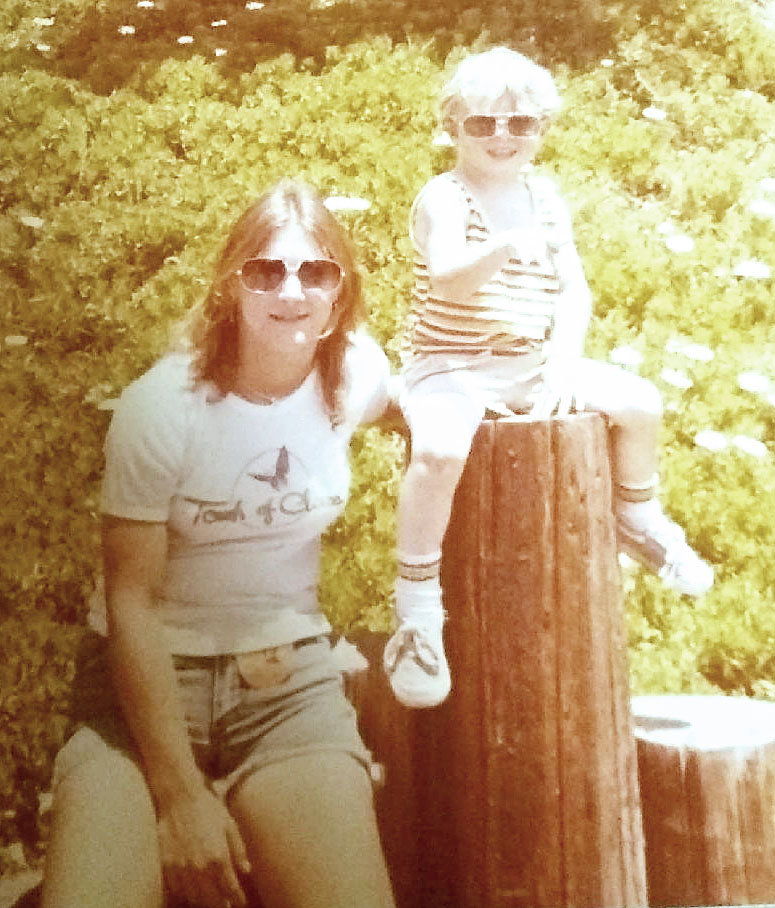
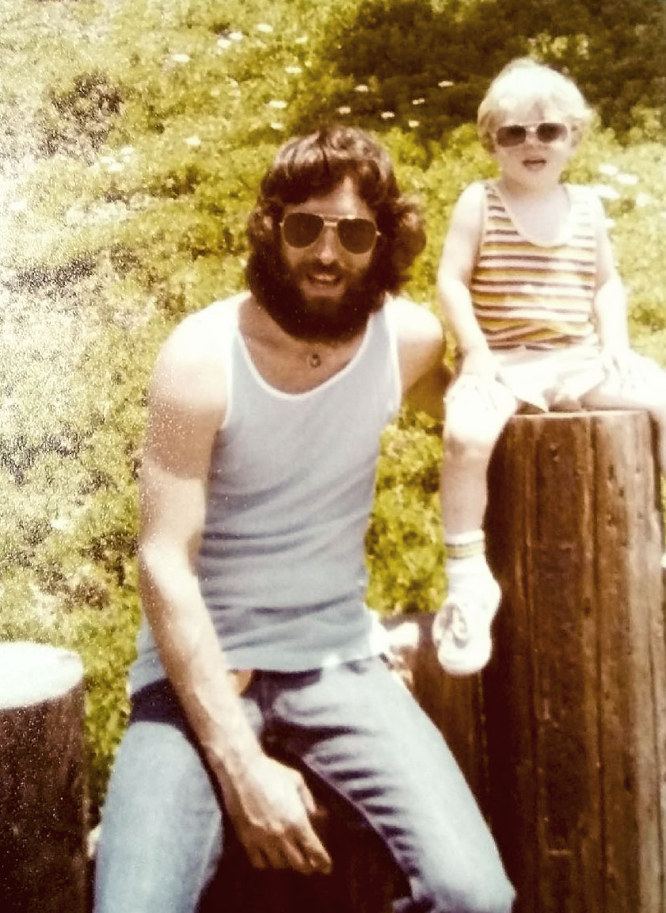

<!doctype html>
<html lang="en">
  <head>
      <title>Jason Printz-Shark Vide</title>
      </head>

    <body>
        <div class="container" id="shark">  
  
            <figure class="figure">
              <video src="sharkvideo.mp4"class="video" poster="shark1.jpg" width="400" height="400" preload controls loop> </video>
              <figcaption class="figure-caption"></figcaption>
            </figure>
          </div>
    </body>
  </html>


  <!-------------------------------------------------------------------------------------------->

  <div id="early" class="container">

    <div id="EarlyPic" class="container col-4"> <!--Early Photos-->
      <div>
      <figure class="figure">
      
      <figcaption class="figure-caption">Jason with his mother, Julie.</figcaption>
        </figure>
      </div>
  
      
        <div>
        <figure class="figure">
        
        <figcaption class="figure-caption">Jason with his father,Jack.</figcaption>
          </figure>
        </div>
  
    </div>
  <!-----------------------------------------------------------Early Years Text----------------------------------------------------->
  <div class="container-fluid">
    <div id="years" class="container col-6 ">
    
  
    <h2 id="earlyyears">Early Years</h2>
  
    <hr/>
  
    
  
    <p class="copy"> 
      Born on April 29th, 1975 to Julie and Jack Printz, Jason was the first born, the couple would later have a second child,
      Jason's younger sister. At the time of his birth, Jason's mother was fifteen years old and his father nineteen. With two young parents, Jason spent alot
      of time in the care of his grandparents, Gene and Francis VanBuskirk. Jason met his best friend Steve when he was four years old, the two were neighbors
      and would remain long-time friends, even though through the years they did not always stay speaking to one another. Jason was a quiet and
      shy child, who was very bright and showed great potential in school. He played soccer as a child and would later play football in high-school.
  </p>
  
  <p class="copy"> 
      Jason remained a quiet child until 6th grade when his reputation took a sharp turn, the quiet shy child had become
      a tough-as nails fighter. After some tumultuous teen years, he would graduate with his GED. He would go onto work in the automotive industry, and become one of the youngest
      store managers at Montgomery Ward. Later he went through a medical school program to work as a radiology tech. He would spend a time working at the Arizona Children's Hospital.
      He would also spend time working as a bouncer at one of Arizona's premier night-club establishments.
  </p>
  
  
    </div>
  
  </div>
  
  
  </div>


  <!-----------------------------------------------------------Family-------------------------------------------------->

 <div id="fam" class="container">
    <div id="Family" class="container col-5 ">
    
  
    <h2 id="famlink">Family</h2>
  
    <hr/>
     
    <p class="copy">Jason has one biological sister, Joelyn. Through the years he had several step-siblings come into his life. After his parents divorce, Jason's father was in a
       long-term relationship with a woman, Katherine. Katherine had two children, Ian and Geoffrey who Jason would spend his teenager years with. Jason's mother, Julie, remarried
       Marcus, who had four daughters, Kristina, Shawna, Rebecca, Erica; who Jason who become very close with as an adult. Growing up in Arizona, most of Jason's family lived there for their entire lives. Aunts,
       Uncles, and cousins were always together for birthdays and holidays. Jason grew up very close to his mother's brother, Dan, who was only a couple years older than him. Jason would
       also grow up very close to Dan's children, Cody and Ashley.             
   </p>
   
   <p class="copy">
       In 1995 Jason married his first wife, Carla Printz. Carla and Jason had grown up in the same neighborhood in Phoenix and were just weeks apart in age. While the two did not
       connect is school soon after they would start a relationship. After living in Phoenix for a short time the two moved in with Carla's parent's in Las Vegas. Carla became pregnant
       with their son, Zachary. Carla and Jason got married at The Little White Wedding Chapel in Vegas in front of a small group of family. Jason was 19 years old at the time and Carla was
       20. In September the two would welcome a bouncing baby boy into the world.
   </p>
   
   <p class="copy">
       Carla and Jason separated in 2001. Although separated the two would never file for divorce and remain married to this day. Zachary divided his time between staying with
       his mother and Jason until he was 11 years old. At that time he moved in full time with Carla and would stay with her through his teenage years. Zachary would marry his wife, Brittany,
       and the two teens would welcome their first child Nikolai, followed by two more children, Brayden and Kellen. The couple currently reside in South Dakota. 
   </p>
   
   <p class="copy">
       After Carla and Jason separated Jason started a relationship with Angel Miller. Jason met Angel at Woody's, a bar in Phoenix. Jason was working as a bouncer, and Angel was a regular
       who came in with a group of her friends. The two quickly moved forward with their relationship when Angel moved in with Jason and his father. At the time Angel was working for a credit
       card company, at their call center. In 2006 Angel became pregnant with the couple's daughter, Trinity. In September just days before Zachary's birthday, Trinity was born in a Phoenix hospital.
       The three had lived in a house that Jason's grandfather had built from the creek rock nearby, soon however Jason would have plans to leave the desert sunshine.
   </p>
   
    </div>
  </div>
  
     <!--Family Media-->
  
      <!---------------------------------------------------------Zachary Card------------------------------------------------------>
  <div>
      <div id="zachinfo" class="card" style="width: 18rem;">
        
        <div class="card-body">
          <h5 class="card-title">Zachary Printz</h5>
          <p class="card-text">Zachary is Jason's first born. He was born in Phoenix, AZ. His mother is Carla Printz</p>
        </div>
        <ul class="list-group list-group-flush">
          <li class="list-group-item">Born: September 1995</li>
          <li class="list-group-item">Wife: Brittany Printz</li>
          <li class="list-group-item">Children: Nikolai, Brayden, Kellen</li>
        </ul>
        <div class="card-body">
          <a href="https://www.facebook.com/zachary.printz.5" target="blank" class="card-link"></a>
          <a href="https://instagram.com/printzfamily?igshid=1ct9210s4it0j" target="blank" class="card-link"></a>
        </div>
      </div>
  
    </div>
  

    <!---------------------- <div class="mb-3">
      <label for="Name" class="form-label">Name</label>
      <input type="name" class="form-control" id="Name" placeholder="Name">
    </div>
    <div class="mb-3">
      <label for="email" class="form-label">Email address</label>
      <input type="email" class="form-control" id="email" placeholder="Email Address">
    </div>
    <div class="mb-3">
      <label for="Memory" class="form-label">Memory</label>
      <textarea class="form-control" id="Memory" rows="3"></textarea> <br/>
      <input type="submit" name="submit">

      

    </div>
  </form>-->